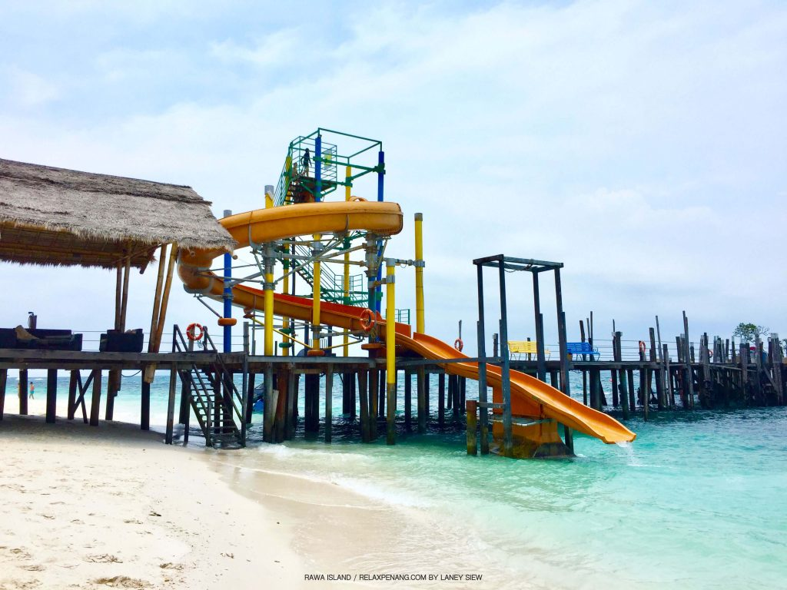

Rawa Island is a coral island in Mersing District, Johor, Malaysia. Nearby islands include Harimau and Mensirip."Rawa" is the local term for white doves, which are abundant in the island. Rawa is a relatively small island. There are no proper roads, only a few walkways. One side of the island is a beach covered with white sand, while the other side has a rocky vertical cliff. The water is clear. There are many sea and land creatures such as fishes, squids, jellyfish, octopuses, Malayan sea eagles, and reptiles. Also sharks Blacktip reef sharks can be found feeding in the sea off rawa. Rawa's waters are home to an abundance of corals. There are two resorts on the island: Rawa Island Resort and Alang's Rawa.
The Rawa Slide is one of the best attractions on the island and that is not unusual, considering it is a fun giant slide that provides you with a just-enough adrenaline rush before you land straight into the clear blue waters.There are no other better chances to unleash your inner child within than going on the Rawa Slide. It may look scary for first-timers don’t worry, it’s actually safe but once you try it, you would probably want more though!.